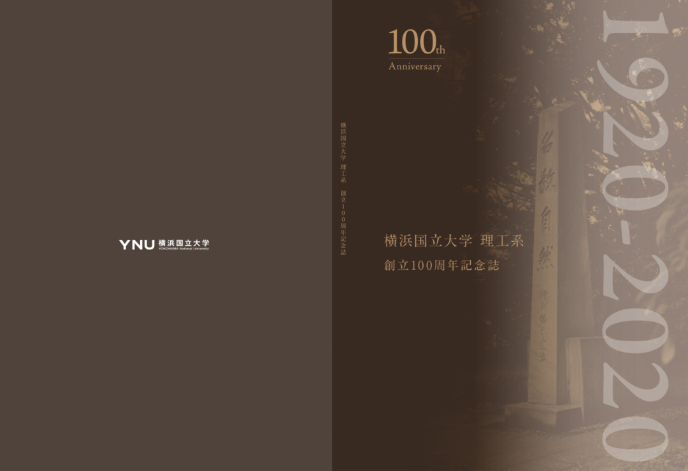

横浜国立大学
イベントの説明文
2020 年に 100 周年を迎えました。イベントの説明文が入ります。2020 年に 100 周年を迎えました。イベントの説明文が入ります。2020 年に 100 周年を迎えました。イベントの説明文が入ります。2020 年に 100 周年を迎えました。イベントの説明文が入ります。
2020 年に 100 周年を迎えました。イベントの説明文が入ります。2020 年に 100 周年を迎えました。イベントの説明文が入ります。2020 年に 100 周年を迎えました。イベントの説明文が入ります。2020 年に 100 周年を迎えました。イベントの説明文が入ります。
委員長からのメッセージ
記念式典のスケジュール
- 日時
- 2021年11月20日（土）
- 場所
- 横浜国立大学 教育文化ホール
記念式典 (15：00～15：30)
司会 眞田学部長
式辞 梅澤実行委員長/研究院長（挨拶並びに事業紹介）
祝辞 梅原学長
祝辞 蛭田前校友会会長（吉野先生ご紹介）
祝辞 永井理工系同窓会代表
祝電紹介
特別記念講演 吉野彰先生 「～～～」 (15：30～16：30)
司会 渡邉前工学研究院長
閉会挨拶 梅澤実行委員長/研究院長
学生寮歌・写真
テキストのダミー文章です。テキストのダミー文章です。テキストのダミー文章です。テキストのダミー文章です。テキストのダミー文章です。テキストのダミー文章です。テキストのダミー文章です。テキストのダミー文章です。テキストのダミー文章です。
テキストのダミー文章です。テキスト内リンク テキストのダミー文章です。
テキスト内リンク外部サイトへ
Pdfファイルへのリンク
Excelファイルへのリンク
Wordファイルへのリンク
Pptファイルへのリンク
※テキストのダミー文章です。テキストのダミー文章です。テキストのダミー文章です。


理工系創立 100周年記念冊子
テキストのダミー文章です。テキストのダミー文章です。テキストのダミー文章です。テキストのダミー文章です。テキストのダミー文章です。テキストのダミー文章です。テキストのダミー文章です。テキストのダミー文章です。テキストのダミー文章です。
テキストのダミー文章です。テキストのダミー文章です。テキストのダミー文章です。テキストのダミー文章です。テキストのダミー文章です。
※テキストのダミー文章です。テキストのダミー文章です。テキストのダミー文章です。
横浜国立大学基金のご案内
テキストのダミー文章です。テキストのダミー文章です。テキストのダミー文章です。テキストのダミー文章です。テキストのダミー文章です。テキストのダミー文章です。テキストのダミー文章です。テキストのダミー文章です。テキストのダミー文章です。
テキストのダミー文章です。テキストのダミー文章です。テキストのダミー文章です。テキストのダミー文章です。テキストのダミー文章です。
※テキストのダミー文章です。テキストのダミー文章です。テキストのダミー文章です。
オンライン参加の申し込み情報
テキストのダミー文章です。テキストのダミー文章です。テキストのダミー文章です。テキストのダミー文章です。テキストのダミー文章です。テキストのダミー文章です。テキストのダミー文章です。テキストのダミー文章です。テキストのダミー文章です。
テキストのダミー文章です。テキストのダミー文章です。テキストのダミー文章です。テキストのダミー文章です。テキストのダミー文章です。
※テキストのダミー文章です。テキストのダミー文章です。テキストのダミー文章です。
記念講演
テキストのダミー文章です。テキストのダミー文章です。テキストのダミー文章です。テキストのダミー文章です。テキストのダミー文章です。テキストのダミー文章です。テキストのダミー文章です。テキストのダミー文章です。テキストのダミー文章です。
テキストのダミー文章です。テキストのダミー文章です。テキストのダミー文章です。テキストのダミー文章です。テキストのダミー文章です。
※テキストのダミー文章です。テキストのダミー文章です。テキストのダミー文章です。